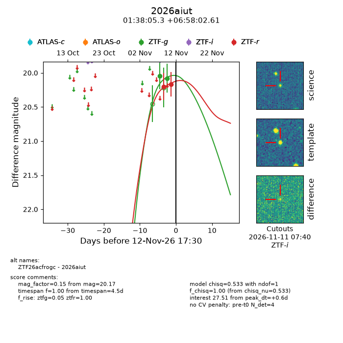
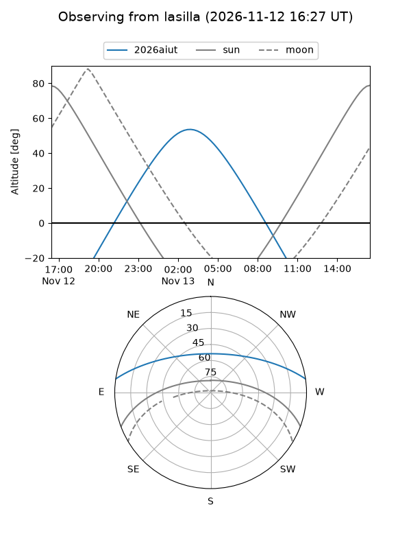
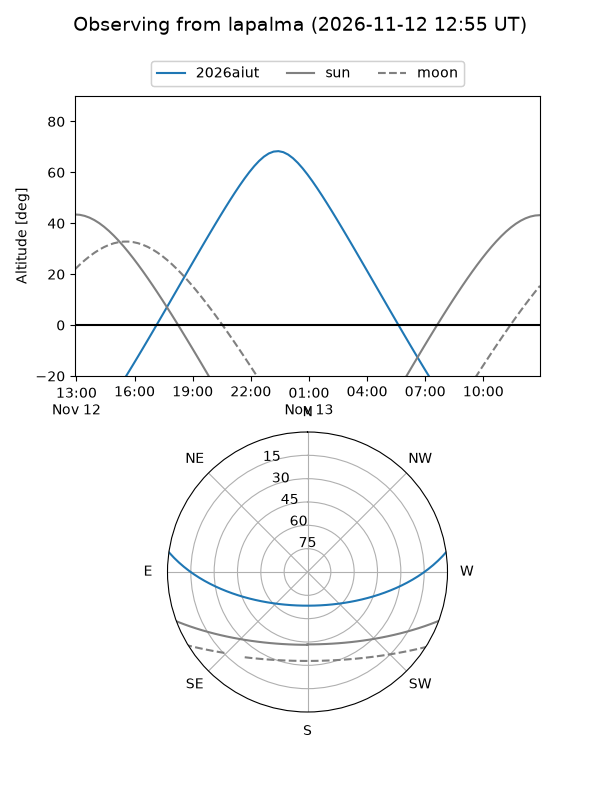
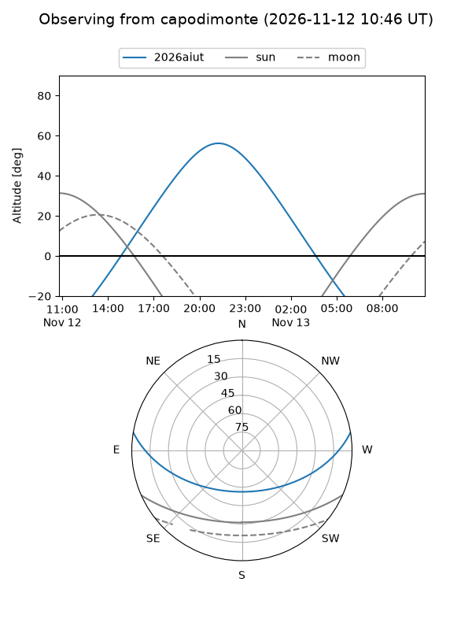
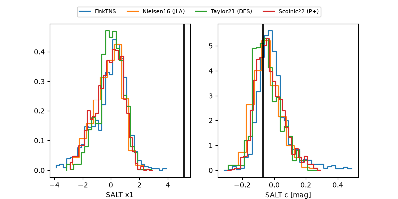

2026aiut
Target 2026aiut at 2026-11-12 17:35
Aliases and brokers:
FINK-ZTF: ztf.fink-portal.org/ZTF26acfrogc
Lasair-ZTF: lasair-ztf.lsst.ac.uk/objects/ZTF26acfrogc
ALeRCE-ZTF: alerce.online/object/ZTF26acfrogc
YSE-PZ: ziggy.ucolick.org/yse/transient_detail/2026aiut
TNS name: wis-tns.org/object/2026aiut
Direct TNS query: direct search
alt names
ZTF26acfrogc (ztf,fink_ztf)
2026aiut (tns,yse)
Coordinates:
equatorial (ra, dec) = 24.5223,+6.96739
equatorial (HMS+DMS) = 01:38:05.34,+06:58:02.61
galactic (l, b) = (142.9344,-54.08267)
Flags:
peak dt: +0.6
Photometry:
last ztfg=20.08, ztfr=20.17
2 ztfg, 2 ztfr detections
Lightcurve

Visibility



Additional plots
